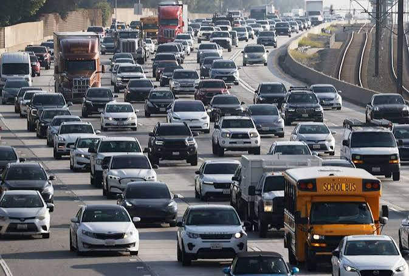
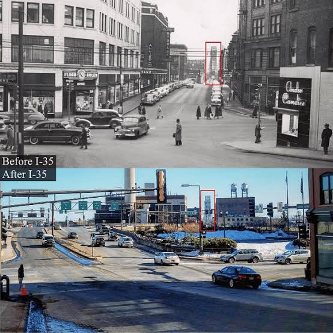

Ever since the late 90s, urban planning has prioritized cars over pedestrians, making it difficult for people to navigate their cities on foot.
Now in 2023, the United States is facing a shortage of walkable cities, with many urban areas designed primarily for cars rather than people. This has led to a number of negative consequences, including increased traffic congestion, air pollution, and greenhouse gas emissions. It has also made it more difficult for people to access jobs, education, and healthcare.

Source: City ObservatoryWhen cities are designed for cars, it can lead to a number of negative consequences. For example, it can increase traffic congestion, air pollution, and greenhouse gas emissions. It can also make it more difficult for people to access jobs, education, and healthcare.
In addition, car-centric urban planning can have negative impacts on public health. When people are forced to rely on cars for transportation, they are less likely to engage in physical activity, which can lead to obesity, heart disease, and other health problems.
Finally, car-centric urban planning can also have social and economic impacts. It can lead to the decline of local businesses, as people are less likely to walk or bike to shops and restaurants. It can also contribute to social isolation, as people are less likely to interact with their neighbors when they are driving everywhere.
“The car-centric approach to urban planning has been the dominant paradigm for decades, but it is increasingly being challenged by a growing recognition of the negative impacts of car dependency on public health, the environment, and social equity.”
<h3><strong>Why I chose this topic</h3></strong> I chose this topic because I am passionate about creating more walkable and bikeable cities. I believe that by prioritizing pedestrians and cyclists over cars, we can create healthier, more sustainable, and more equitable communities.

Image Credits
- "Traffic in New York City" by Mario Tama
- "Suburban Sprawl" by Jordan van der Hagen
- "Better Neighborhoods" by Rundell Ernstberger Associates
- "Flatiron Building" by Stacey Leasca